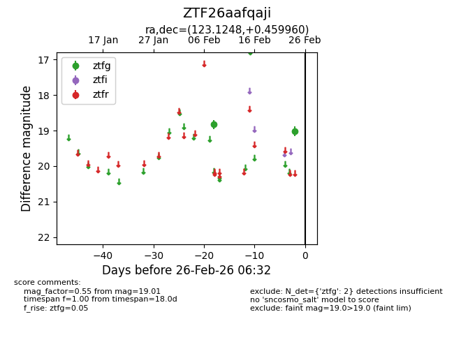
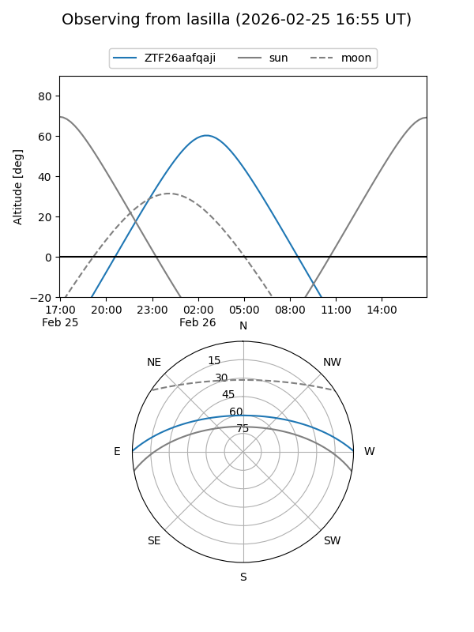
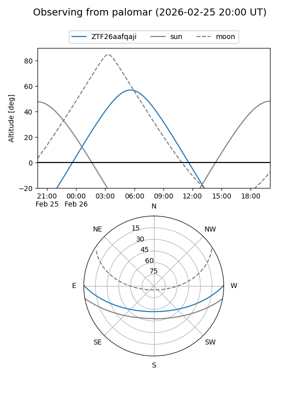

ZTF26aafqaji
Target ZTF26aafqaji at 2026-02-26 06:33
Aliases and brokers:
FINK: link
Lasair: link
ALeRCE: link
alt names
ZTF26aafqaji (ztf,fink_ztf)
Coordinates:
equatorial (ra, dec) = 123.1248,+0.45996
equatorial (HMS+DMS) = 08:12:29.95,+00:27:35.86
galactic (l, b) = (222.0637,+18.17462)
Flags:
Photometry:
last ztfg=19.01
2 ztfg detections
Lightcurve

Visibility


Additional plots